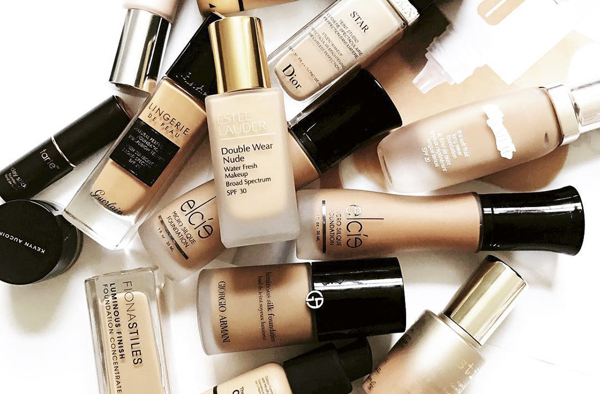
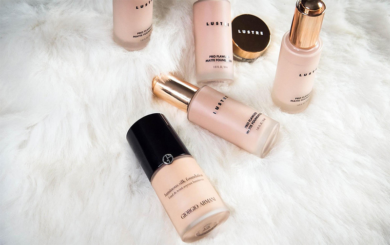
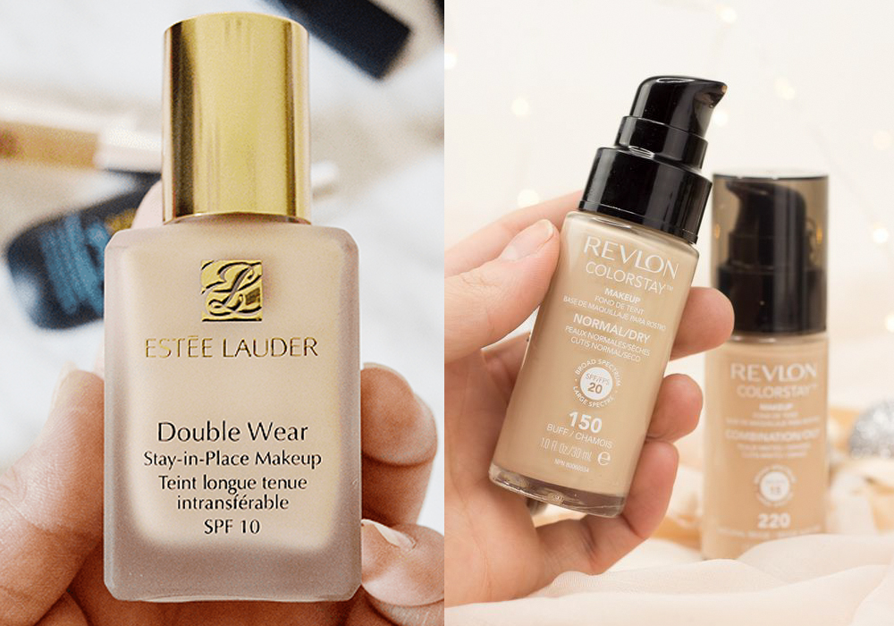
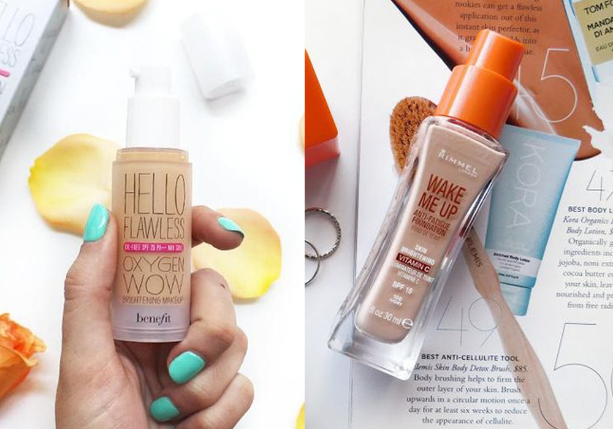
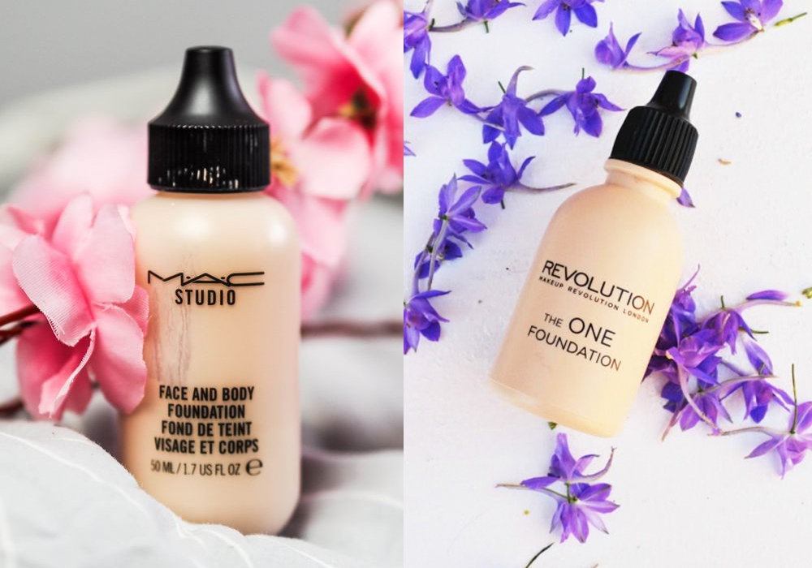

|  |
5 bản dupe kem nền hoàn hảo của các hãng mỹ phẩm trang điểm sang chảnh bậc nhất |
| Bạn thích những mỹ phẩm trang điểm high-end đình đám nhưng lại sợ “đau” ví tiền? Vậy thì đừng bỏ qua những bản dupe của chúng với hiệu quả và chất lượng tương đồng nhưng sở hữu mức giá dễ chịu hơn nhiều lần. Chúng sẽ là “vị cứu tinh” cho các layout trang điểm đơn giản đến chuyên nghiệp của bạn. |
1. Giorgio Armani Luminous Silk Foundation VS Lustre Pro Flawless Matte Foundation |
|  |
|
Nếu bạn là một cô nàng có làn da ít khuyết điểm và đang cần tìm một loại kem nền mỏng dành cho việc trang điểm đơn giản nhẹ nhàng tương tự Giorgio Armani Luminous Silk Foundation thì hãy thử Lustre Pro Flawless Matte Foundation. Điểm chung lớn nhất giữa 2 sản phẩm này là lớp finish semi-matte mỏng nhẹ và cảm giác tự nhiên mà chúng mang lại. Nếu Giorgio Armani có kết cấu hơi gel nhẹ thì Lustre Pro Flawless Matte Foundation thuộc dạng kết cấu serum lỏng, tuy nhiên cả hai đều mang lại kết quả khá tương tự trên da với lớp nền ráo, nhẹ và bền màu đến khoảng 6 tiếng. |
2. Estee Lauder Double Wear Liquid Foundation VS Revlon Colorstay Foundation |
|  |
|
Revlon Colorstay Foundation được đánh giá là sự thay thế hoàn hảo cho Estee Lauder Double Wear Liquid Foundation, độ che phủ của hai sản phẩm mỹ phẩm trang điểm này đều ở mức cao. Giá chỉ xấp xỉ một phần năm của Estee Lauder Double Wear Liquid Foundation, nhưng Revlon Colorstay Foundation không hề kém cạnh khi sở hữu lớp texture mỏng, nhẹ tựa lông hồng, bằng chứng là lớp finish có thể lên đến hai lớp mà không hề nặng mặt. Dù là Revlon Colorstay Foundation bản dupe hay Estee Lauder Double Wear Liquid Foundation high-end thì đều tạo ra lớp nền bám lâu và kiềm dầu cực đỉnh, xứng đáng là “bạn thân” của hội chị em da dầu. |
3. Benefit Hello Flawless Oxygen Wow Foundation VS Rimmel Wake Me Up Foundation |
|  |
|
Đứng thứ ba trong danh sách các loại kem nền xuất sắc đến từ dòng mỹ phẩm high-end là Benefit Hello Flawless Oxygen Wow Foundation có “người em song sinh” là Rimmel Wake Me Up Foundation với giá chỉ vỏn vẹn một phần ba. Đều sở hữu texture dễ tán, mang lại lớp finish nhẹ nhàng, thích hợp cho những cô nàng theo đuổi phong cách trang điểm đơn giản tự nhiên. Độ che phủ của chúng đạt mức trung bình, tuy nhiên Rimmel Wake Me Up Foundation lại có độ bám lâu hơn. Tuy nhiên, chính vì đặc điểm này mà Rimmel Wake Me Up Foundation không dành cho những nàng da khô, vì kết cấu khá đặc cộng với độ bám cao nên dễ bị khô và bong tróc da. |
4. MAC Studio Face And Body Foundation VS Revolution The One Foundation |
|  |
|
Cùng “nghía” qua xem bản dupe thần thánh Revolution The One Foundation với giá rẻ chỉ 1/4 loại kem nền luôn nằm trong top những sản phẩm bán chạy nhất của mỹ phẩm trang điểm nhà MAC - MAC Studio Face And Body Foundation. Giống nhau từ thiết kế bên ngoài vô cùng độc đáo đến chất texture bên trong, đều lỏng, nhẹ, mang lại cảm giác thoải mái khi sử dụng, vì vậy, lớp finish được tạo nên vô cùng tự nhiên dù chồng nhiều hay ít lớp kem nền, chưa kể còn bám cực lâu trên da. Tuy nhiên, MAC Studio Face And Body Foundation nổi tiếng với khả năng cấp ẩm thích hợp với da khô ít khuyết điểm thì Revolution The One Foundation chứa những hạt phấn li ti hút dầu thừa lại phù hợp với da dầu hoặc hỗn hợp thiên dầu. |